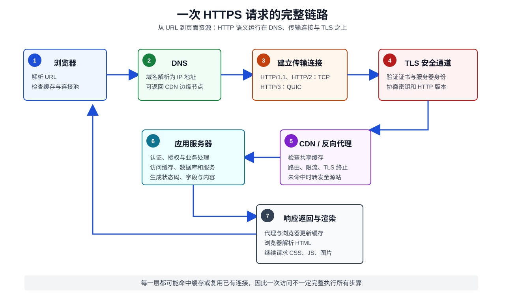
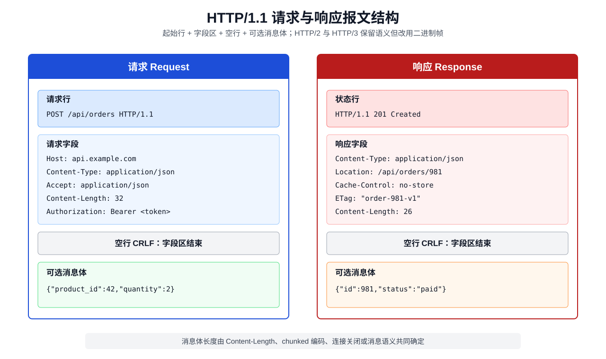
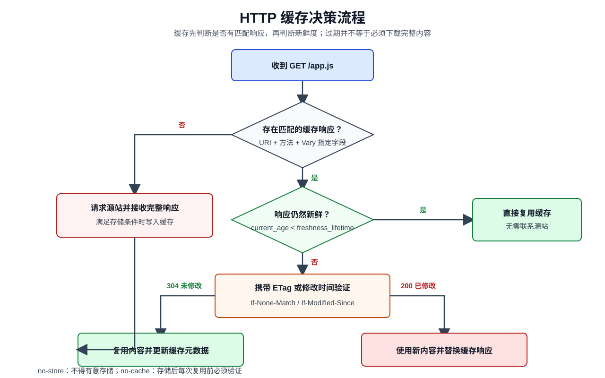
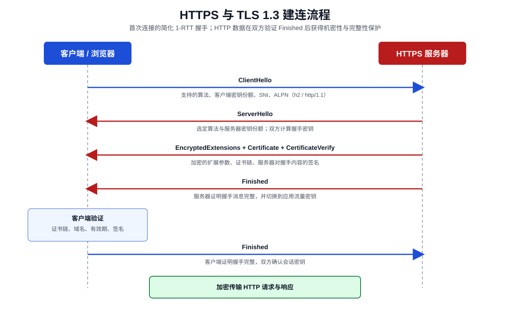
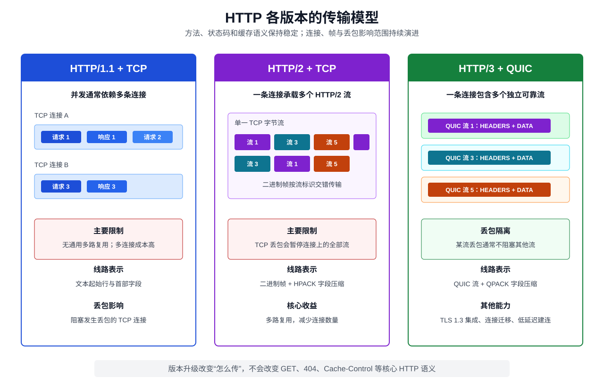

HTTP：从一次请求到现代 Web 传输体系
HTTP（Hypertext Transfer Protocol，超文本传输协议）不是“传输网页的 TCP 协议”，而是一组独立于具体传输方式的应用层语义：客户端用方法表达意图，服务器用状态码表达结果，双方用字段描述消息和资源表示。
1. 先建立整体认识
HTTP 是一种无状态、应用层、请求—响应协议族。它为分布式信息系统提供统一接口，使客户端无需了解服务端内部实现，服务端也无需了解客户端的具体用途。
一次典型的网页访问经过以下链路：

- 浏览器解析 URL，确定协议、主机、端口和目标路径。
- 浏览器检查本地缓存，必要时通过 DNS 获取服务器地址。
- 客户端建立 TCP 连接，或为 HTTP/3 建立 QUIC 连接。
- HTTPS 场景协商 TLS，验证服务器身份并建立加密通道。
- 客户端发送 HTTP 请求，可能先经过代理、CDN、网关和负载均衡器。
- 源站处理请求并产生 HTTP 响应。
- 中间缓存与浏览器根据缓存字段决定是否存储响应。
- 浏览器解析响应内容，并继续请求 CSS、JavaScript、图片等子资源。
需要分清各层的职责：
| 层次 | 典型协议 | 核心职责 |
|---|---|---|
| 应用层 | HTTP、DNS | 描述资源操作、消息语义和名称解析 |
| 安全层 | TLS | 身份认证、机密性与完整性保护 |
| 传输层 | TCP、QUIC | 端到端传输、可靠性、拥塞控制 |
| 网络层 | IP | 跨网络寻址和分组转发 |
| 链路层 | Ethernet、Wi-Fi | 相邻节点间传输帧 |
HTTP 定义“要做什么、结果是什么”；HTTP/1.1、HTTP/2 和 HTTP/3 定义这些语义如何在线路上传输。
2. HTTP 为什么会出现
1989 年，Tim Berners-Lee 提出万维网。最早的 HTTP/0.9 极其简单：客户端发送一行 GET，服务器返回 HTML，随后关闭连接。
随着 Web 从静态文档系统发展为通用应用平台，协议逐步增加：
- 请求和响应元数据，即首部字段。
- 状态码和多种请求方法。
- 虚拟主机、缓存、内容协商和身份认证。
- 持久连接、多路复用和首部压缩。
- 加密、移动网络适应能力和更低的连接延迟。
HTTP 能长期演进的关键并不是某种报文格式，而是它稳定的抽象：
客户端对“资源”表达操作意图
↓
服务器返回该操作的结果和资源“表示”
3. HTTP 的核心抽象
3.1 资源（Resource）
资源是客户端希望操作的概念目标，可以是文章、用户、订单、搜索结果，也可以是一个计算过程。资源由 URI 标识，但 URI 不是资源本身。
https://api.example.com/users/42
这个 URI 标识“编号为 42 的用户”资源，而不是某个固定 JSON 文件。
3.2 表示（Representation）
表示是资源在某一时刻、某种媒体类型下的具体表达。同一资源可以有不同表示：
Accept: application/json → JSON 表示
Accept: text/html → HTML 表示
Accept-Language: zh-CN → 中文表示
Content-Type 描述实际返回的表示类型，Content-Encoding 描述该表示是否经过 gzip、br 等编码。
3.3 消息（Message）
HTTP 通过请求消息和响应消息交换信息。抽象消息由以下部分组成：
- 控制数据：方法、目标、状态码等。
- 字段：描述消息、表示和处理要求的名称—值对。
- 内容：可选的消息主体。
- 尾部字段：内容之后发送的可选元数据。
3.4 无状态（Stateless）
“无状态”表示服务器可以仅根据当前请求理解其语义，HTTP 不要求服务器记住前一次请求。
无状态不等于应用不能保存状态。登录状态、购物车和事务进度通常通过以下机制实现：
- Cookie 中的会话标识。
Authorization中的访问令牌。- URL 或请求体中的业务标识。
- 服务端数据库、缓存或会话存储。
无状态让请求更容易被代理、缓存和负载均衡，但应用必须显式传递关联请求所需的信息。
4. URL 如何定位资源
以以下 URL 为例：
https://www.example.com:8443/products/42?lang=zh#reviews
| 部分 | 示例 | 作用 |
|---|---|---|
| 方案（Scheme） | https |
指定访问语义和默认端口 |
| 主机（Host） | www.example.com |
标识网络主机 |
| 端口（Port） | 8443 |
指定服务端口；HTTPS 默认是 443 |
| 路径（Path） | /products/42 |
标识目标资源 |
| 查询（Query） | lang=zh |
向资源提供附加参数 |
| 片段（Fragment） | reviews |
由客户端解释，不随 HTTP 请求发送 |
同源（Origin）由方案、主机和端口共同确定：
origin = scheme + host + port
https://example.com/a 与 https://example.com/b 同源；与 http://example.com/a 或 https://api.example.com/a 不同源。
5. HTTP/1.1 报文长什么样
HTTP/1.1 使用文本形式的起始行和字段，每行以 CRLF 结束。首部区之后必须有一个空行，随后才是可选的消息体。

5.1 请求报文
POST /api/orders?source=web HTTP/1.1
Host: api.example.com
Content-Type: application/json
Accept: application/json
Authorization: Bearer <access-token>
Content-Length: 48
{"product_id":42,"quantity":2,"currency":"CNY"}
请求行由三部分组成：
方法 SP 请求目标 SP HTTP 版本
Host 在 HTTP/1.1 中必需，它让同一 IP 地址上的服务器区分多个虚拟主机。HTTP/2 和 HTTP/3 使用 :authority 伪首部表达相同信息。
5.2 响应报文
HTTP/1.1 201 Created
Content-Type: application/json
Location: /api/orders/981
Cache-Control: no-store
Content-Length: 27
{"id":981,"status":"paid"}
状态行由版本、三位状态码和可选原因短语组成。客户端必须依据状态码处理响应，不能依赖原因短语。
5.3 消息边界如何确定
HTTP/1.1 是字节流协议，必须明确一条消息在哪里结束。常见方式有：
| 方式 | 说明 |
|---|---|
Content-Length |
明确给出消息体的八位字节长度 |
Transfer-Encoding: chunked |
将未知总长度的内容分块发送，以零长度块结束 |
| 连接关闭 | 某些响应以连接关闭作为消息结束标志 |
| 语义决定无消息体 | 如 HEAD 响应、1xx、204、304 |
同时发送含冲突含义的 Content-Length 与 Transfer-Encoding，或让不同代理采用不同解析规则，可能导致 HTTP 请求走私（Request Smuggling）。
6. 请求方法：表达操作意图
| 方法 | 典型语义 | 安全 | 幂等 | 响应通常可缓存 |
|---|---|---|---|---|
GET |
获取资源当前表示 | 是 | 是 | 是 |
HEAD |
只获取与 GET 相同的响应字段 |
是 | 是 | 是 |
POST |
让资源按自身语义处理内容 | 否 | 否 | 需显式允许 |
PUT |
用请求表示创建或替换目标资源 | 否 | 是 | 否 |
PATCH |
对资源执行部分修改 | 否 | 通常否 | 否 |
DELETE |
删除目标资源的关联 | 否 | 是 | 否 |
OPTIONS |
查询通信选项 | 是 | 是 | 否 |
CONNECT |
建立隧道 | 否 | 否 | 否 |
TRACE |
执行诊断回环 | 是 | 是 | 否 |
6.1 安全性（Safe）
安全方法表示客户端没有请求改变服务器状态。它不表示：
- 请求一定没有任何副作用，日志和计费仍可能发生。
- 请求内容经过加密。
- 接口不存在安全漏洞。
GET 不应被设计为“点击即删除”。爬虫、预取器和缓存都可能自动发起安全方法。
6.2 幂等性（Idempotent）
幂等表示多次发送相同请求，其预期效果与发送一次相同。它不要求每次响应完全相同。
PUT /users/42 发送同一完整表示多次 → 最终资源状态相同
DELETE /users/42 执行多次 → 资源最终都不存在
第二次 DELETE 可以返回 404，但它仍然是幂等的，因为目标状态没有进一步变化。
对于支付、创建订单等非幂等 POST，可以使用业务幂等键：
Idempotency-Key: 7f30c8f4-...
服务器保存键与处理结果，重复请求返回已有结果而不是再次执行业务操作。
6.3 PUT 与 PATCH 的区别
PUT的语义是创建或替换目标资源的完整状态。PATCH的语义是应用一组修改指令，具体格式由媒体类型决定。
不要仅因“更新”就机械地使用 PUT。若请求只包含部分字段，且遗漏字段不代表删除，通常更符合 PATCH 语义。
7. 状态码：服务器如何表达结果
状态码的第一位定义响应类别。客户端即使不认识某个具体状态码，也应按其类别理解。
| 类别 | 含义 | 处理重点 |
|---|---|---|
1xx |
信息性响应 | 请求仍在处理中 |
2xx |
成功 | 操作已被接收、理解或完成 |
3xx |
重定向或缓存复用 | 需要进一步动作或使用已有表示 |
4xx |
客户端错误 | 请求本身、身份或权限存在问题 |
5xx |
服务端错误 | 服务器处理有效请求时失败 |
7.1 常用成功状态
| 状态码 | 使用场景 |
|---|---|
200 OK |
通用成功，通常包含结果表示 |
201 Created |
已创建资源，通常配合 Location |
202 Accepted |
已接受异步任务，但尚未完成 |
204 No Content |
成功且无需返回内容 |
206 Partial Content |
成功返回范围请求的部分内容 |
7.2 重定向中的方法变化
| 状态码 | 永久性 | 后续请求方法 |
|---|---|---|
301 Moved Permanently |
永久 | 历史客户端可能把 POST 改成 GET |
302 Found |
临时 | 历史客户端可能把 POST 改成 GET |
303 See Other |
临时 | 明确改用 GET 或 HEAD |
307 Temporary Redirect |
临时 | 保持原方法和请求体 |
308 Permanent Redirect |
永久 | 保持原方法和请求体 |
提交表单后跳转到结果页常使用 303，形成 Post/Redirect/Get 模式，避免刷新页面时重复提交。
7.3 容易混淆的错误状态
| 状态码 | 准确含义 |
|---|---|
400 Bad Request |
请求语法、消息结构或参数整体无效 |
401 Unauthorized |
缺少或无法接受认证凭据，通常应带 WWW-Authenticate |
403 Forbidden |
已理解请求，但拒绝授权执行 |
404 Not Found |
找不到目标；也可用于隐藏资源是否存在 |
405 Method Not Allowed |
资源存在但不支持该方法，应带 Allow |
409 Conflict |
请求与资源当前状态冲突 |
412 Precondition Failed |
If-Match 等前置条件失败 |
415 Unsupported Media Type |
请求内容类型或编码不受支持 |
422 Unprocessable Content |
语法正确，但内容在语义上无法处理 |
429 Too Many Requests |
触发限流，可配合 Retry-After |
500 Internal Server Error |
未归类的服务端内部错误 |
502 Bad Gateway |
网关从上游收到无效响应 |
503 Service Unavailable |
服务暂不可用，可配合 Retry-After |
504 Gateway Timeout |
网关等待上游响应超时 |
401 的英文历史命名容易误导：它实际表示“未认证或认证无效”；403 才强调“无权访问”。
8. 首部字段：HTTP 的可扩展元数据
字段名称不区分大小写。HTTP/2 和 HTTP/3 在线路上要求小写，但应用代码不应依赖字段名大小写。
8.1 常用请求字段
| 字段 | 作用 |
|---|---|
Host |
指定 HTTP/1.1 目标主机和可选端口 |
Accept |
声明可接受的响应媒体类型 |
Accept-Encoding |
声明可接受的内容编码，如 gzip、br |
Accept-Language |
声明偏好的自然语言 |
Authorization |
携带认证凭据 |
Cookie |
携带当前请求匹配的 Cookie |
If-None-Match |
使用 ETag 执行条件请求 |
If-Match |
仅当当前 ETag 匹配时执行写操作 |
Range |
请求资源的部分字节范围 |
Origin |
表明请求来源，参与 CORS 和 CSRF 防护 |
User-Agent |
描述客户端软件 |
8.2 常用响应字段
| 字段 | 作用 |
|---|---|
Content-Type |
描述内容媒体类型 |
Content-Length |
描述内容长度 |
Content-Encoding |
描述内容编码 |
Cache-Control |
控制缓存存储与复用 |
ETag |
提供当前表示的实体标签 |
Last-Modified |
表示最后修改时间 |
Location |
指向创建的资源或重定向目标 |
Set-Cookie |
要求用户代理保存 Cookie |
Vary |
指定缓存键还依赖哪些请求字段 |
WWW-Authenticate |
提供认证质询 |
Content-Security-Policy |
限制页面可加载或执行的资源 |
8.3 逐跳字段与端到端字段
端到端字段应转发给最终接收者；逐跳字段只对当前连接有效，代理不得直接向下一跳转发。
HTTP/1.1 的典型逐跳字段包括 Connection、Keep-Alive、Transfer-Encoding 和 Upgrade。HTTP/2 与 HTTP/3 禁止使用大多数连接专属字段。
9. 内容协商
客户端可用 Accept* 字段描述偏好，服务器选择一种表示返回：
Accept: text/html, application/json;q=0.9
Accept-Language: zh-CN, en;q=0.7
Accept-Encoding: br, gzip
质量值（Quality Value，q）范围是 0 到 1，默认值为 1。值越高，优先级越高。
服务器若根据请求字段选择表示，应通过 Vary 告知缓存：
Vary: Accept-Encoding, Accept-Language
否则共享缓存可能把中文 gzip 响应错误地复用于需要英文或不支持 gzip 的客户端。
10. 缓存：复用响应而不是重复传输
HTTP 缓存分为：
- 私有缓存（Private Cache）：只服务一个用户，例如浏览器缓存。
- 共享缓存（Shared Cache）：服务多个用户，例如 CDN 和正向代理缓存。
缓存处理的核心问题依次是：能否存储、是否匹配、是否新鲜、过期后如何验证。

10.1 强缓存
仍处于新鲜期的响应可以直接复用，无需联系源站：
Cache-Control: public, max-age=3600
max-age=3600：响应在生成后的 3600 秒内保持新鲜。s-maxage=600：仅覆盖共享缓存的新鲜期。public：明确允许共享缓存存储。private：只允许私有缓存存储。
10.2 协商缓存
响应过期后，缓存可带验证器向服务器确认：
If-None-Match: "v42"
资源未改变时：
HTTP/1.1 304 Not Modified
ETag: "v42"
Cache-Control: max-age=3600
304 不携带新的表示内容，缓存复用本地内容并更新相关元数据。
常用验证器：
| 验证器 | 请求字段 | 特点 |
|---|---|---|
ETag |
If-None-Match |
可精确表示版本，优先使用 |
Last-Modified |
If-Modified-Since |
时间精度有限，适合作为后备 |
10.3 no-cache 不等于不缓存
| 指令 | 准确含义 |
|---|---|
no-cache |
可以存储，但每次复用前必须验证 |
no-store |
不得有意存储请求或响应 |
must-revalidate |
过期后必须成功验证，不能自行使用陈旧响应 |
immutable |
新鲜期内内容不会改变，客户端无需主动重新验证 |
敏感响应常使用：
Cache-Control: no-store
带内容哈希的静态资源常使用：
Cache-Control: public, max-age=31536000, immutable
文件内容改变时生成新 URL，例如 app.a81f3c.js，从而安全地设置长期缓存。
10.4 用条件请求防止并发覆盖
ETag 不只用于读取缓存，也可实现乐观并发控制：
PUT /articles/42 HTTP/1.1
If-Match: "revision-7"
只有资源当前仍是 revision-7 才更新；否则返回 412 Precondition Failed，防止覆盖其他客户端刚提交的版本。
11. Cookie 与会话
服务器通过 Set-Cookie 要求浏览器保存状态：
Set-Cookie: session_id=abc123; Path=/; Secure; HttpOnly; SameSite=Lax
后续匹配请求由浏览器自动携带：
Cookie: session_id=abc123
重要属性：
| 属性 | 作用 |
|---|---|
Domain |
限定可接收 Cookie 的域范围 |
Path |
限定请求路径范围，不是可靠的安全边界 |
Expires / Max-Age |
控制持久化时间 |
Secure |
仅通过安全连接发送 |
HttpOnly |
禁止 JavaScript 通过 document.cookie 读取 |
SameSite |
限制跨站请求携带，降低 CSRF 风险 |
推荐会话 Cookie：
Set-Cookie: __Host-session=<opaque-id>; Path=/; Secure; HttpOnly; SameSite=Lax
__Host- 前缀要求 Secure、Path=/ 且不能设置 Domain，能减少 Cookie 覆盖和作用域配置错误。
Cookie 是浏览器状态管理机制，不是 HTTP 核心语义的一部分。即使使用 JWT，也必须评估令牌存放位置、XSS、CSRF、撤销和过期策略。
12. HTTPS：HTTP over TLS
HTTPS 表示通过经过认证和加密的安全连接访问 HTTP 资源。它提供：
- 机密性：旁路观察者难以读取 HTTP 内容。
- 完整性：传输内容被篡改时能够被检测。
- 身份认证：客户端验证服务器控制目标域名对应的证书私钥。

12.1 TLS 1.3 简化流程
- 客户端发送
ClientHello，包含支持的算法、密钥份额、SNI 和 ALPN。 - 服务器发送
ServerHello并选定参数，双方计算会话密钥。 - 服务器发送证书和对握手内容的签名。
- 客户端验证证书链、域名、有效期和签名。
- 双方发送
Finished验证握手完整性，随后传输加密的 HTTP 数据。
ALPN（Application-Layer Protocol Negotiation，应用层协议协商）让双方在 TLS 握手中选择 http/1.1、h2 或 h3 等应用协议。
12.2 HTTPS 不能解决什么
HTTPS 不保证：
- 网站业务可信或内容无恶意。
- 服务端数据库和应用逻辑安全。
- 客户端不存在 XSS、恶意扩展或终端入侵。
- 域名、目标 IP、数据长度和时序等全部元数据都不可见。
13. HTTP/1.1、HTTP/2 与 HTTP/3
三个版本共享方法、状态码、字段和缓存语义，主要区别是如何组织消息和利用底层传输。

| 特性 | HTTP/1.1 | HTTP/2 | HTTP/3 |
|---|---|---|---|
| 底层传输 | TCP | TCP | QUIC（基于 UDP） |
| 报文形式 | 文本起始行与字段 | 二进制帧 | QUIC 流上的二进制帧 |
| 并发方式 | 多连接；流水线很少使用 | 单连接多路复用 | 单连接多路复用 |
| 字段压缩 | 无 | HPACK | QPACK |
| 丢包影响 | 阻塞该 TCP 连接 | TCP 层阻塞全部流 | 通常只阻塞受影响的流 |
| 加密要求 | 可选 | 规范允许明文，浏览器实际主要用 TLS | QUIC 集成 TLS 1.3 |
| 连接迁移 | 不支持 | 不支持 | 可通过连接 ID 支持 |
13.1 HTTP/1.1 的限制
HTTP/1.1 默认使用持久连接，多个请求可复用同一 TCP 连接。但没有通用的多路复用层：
- 不使用流水线时，后一请求等待前一响应。
- 流水线要求按请求顺序返回响应，存在应用层队头阻塞。
- 浏览器通常建立多个 TCP 连接实现并发，增加握手和拥塞控制成本。
13.2 HTTP/2 如何多路复用
HTTP/2 把消息拆成带流标识的帧。多个流的 HEADERS、DATA 帧可在同一 TCP 连接中交错传输，接收方再按流重组。
这消除了 HTTP/1.1 的应用层队头阻塞，但没有消除 TCP 队头阻塞：TCP 丢失一个分段时，后续已到达字节也必须等待重传，连接上的所有 HTTP/2 流都会暂停。
13.3 HTTP/3 为什么使用 QUIC
QUIC 在一个连接内提供多个独立可靠流。某个流的数据丢失通常不会阻止其他流继续交付。
QUIC 还带来：
- TLS 1.3 与传输握手结合，减少建连往返。
- 使用连接 ID 标识连接，可适应移动设备网络地址变化。
- 用户态实现便于协议快速演进。
- 对整个连接统一执行拥塞控制。
HTTP/3 并不是“不可靠的 HTTP”。UDP 只是承载容器，QUIC 自己实现可靠传输、重传、流量控制和拥塞控制。
14. 代理、网关与 CDN
HTTP 天然允许中间节点：
用户代理 → 正向代理 → CDN/反向代理 → API 网关 → 应用服务器
| 组件 | 面向对象 | 典型作用 |
|---|---|---|
| 正向代理 | 代表客户端 | 访问控制、隐私、企业出口 |
| 反向代理 | 代表服务端 | TLS 终止、路由、压缩、限流 |
| CDN | 靠近用户的共享缓存 | 静态和可缓存动态内容加速 |
| API 网关 | API 调用方和后端服务 | 认证、配额、协议转换、聚合 |
| 隧道 | 不解释内部内容 | 通过 CONNECT 转发双向字节 |
中间节点使 HTTP 具备扩展性，也带来风险：
- 错误缓存个性化响应导致数据泄露。
- 代理间报文解析差异导致请求走私。
- 未建立可信代理链时伪造
X-Forwarded-For。 - 网关超时、重试与应用重试叠加，放大流量。
生产系统应明确定义哪一层负责 TLS、认证、限流、重试、缓存和超时，避免职责重叠。
15. CORS：浏览器的跨源读取许可
同源策略限制网页脚本读取其他源的响应。CORS（Cross-Origin Resource Sharing，跨源资源共享）允许服务器通过响应字段授予跨源读取权限。
简单请求可直接发送，并在响应中检查：
Access-Control-Allow-Origin: https://app.example.com
Vary: Origin
使用非简单方法、非简单字段或特定内容类型时，浏览器先发送预检请求：
OPTIONS /api/orders HTTP/1.1
Origin: https://app.example.com
Access-Control-Request-Method: POST
Access-Control-Request-Headers: authorization, content-type
服务器可响应：
Access-Control-Allow-Origin: https://app.example.com
Access-Control-Allow-Methods: POST
Access-Control-Allow-Headers: Authorization, Content-Type
Access-Control-Max-Age: 600
需要注意：
- CORS 是浏览器执行的读取限制，不是身份认证或网络防火墙。
- 非浏览器客户端不受同源策略约束。
- 简单跨源请求可能已经到达并改变服务端状态，只是脚本不能读取响应。
- 携带凭据时不能使用
Access-Control-Allow-Origin: *。 - 动态回显
Origin前必须与允许列表严格匹配。
16. 认证、授权与凭据
HTTP 提供认证质询框架：
HTTP/1.1 401 Unauthorized
WWW-Authenticate: Bearer realm="orders"
客户端随后携带凭据：
Authorization: Bearer <access-token>
常见机制：
| 机制 | 特点 | 主要注意事项 |
|---|---|---|
| Basic | 用户名密码经 Base64 编码 | 必须配合 HTTPS；Base64 不是加密 |
| Session Cookie | 服务端保存会话状态 | 防范 CSRF、会话固定与劫持 |
| Bearer Token | 持有者即可使用 | 防止泄露，限制寿命和权限 |
| mTLS | 客户端也提供证书 | 运维和证书生命周期复杂 |
认证回答“你是谁”，授权回答“你能做什么”。服务端必须执行授权检查，不能仅依赖前端隐藏按钮。
17. 压缩、分块与范围请求
17.1 内容编码
客户端声明：
Accept-Encoding: br, gzip
服务器选择：
Content-Encoding: br
Vary: Accept-Encoding
压缩适合 HTML、CSS、JavaScript、JSON 等文本；JPEG、PNG、MP4 等已压缩格式继续压缩收益很低。
17.2 分块传输不等于内容压缩
Transfer-Encoding: chunked 解决 HTTP/1.1 消息边界问题；Content-Encoding: gzip 改变内容表示的编码。两者用途不同。
HTTP/2 和 HTTP/3 使用帧边界，不使用 HTTP/1.1 的 chunked 编码。
17.3 范围请求
客户端可只请求资源的一部分：
Range: bytes=1000-1999
服务器成功时返回：
HTTP/1.1 206 Partial Content
Content-Range: bytes 1000-1999/5000
范围请求用于视频拖动、断点续传和大文件并行下载。服务端需要限制范围数量和复杂度，避免资源消耗攻击。
18. HTTP 安全基线
18.1 传输与 Cookie
- 全站使用 HTTPS，并将 HTTP 重定向到 HTTPS。
- 评估启用 HSTS，防止后续访问降级到明文 HTTP。
- 会话 Cookie 设置
Secure、HttpOnly和合适的SameSite。 - 不把密码、令牌和个人敏感信息放进 URL；URL 可能进入日志、历史和
Referer。
18.2 浏览器响应头
| 字段 | 主要作用 |
|---|---|
Content-Security-Policy |
限制脚本、样式和其他资源来源，降低 XSS 风险 |
X-Content-Type-Options: nosniff |
禁止 MIME 类型嗅探 |
Referrer-Policy |
控制跨页面发送的来源信息 |
Permissions-Policy |
限制摄像头、定位等浏览器能力 |
Cross-Origin-Opener-Policy |
隔离顶层浏览上下文 |
安全字段不能替代输出编码、输入验证、参数化查询和服务端授权。
18.3 报文解析与资源限制
- 前后端采用一致、严格的 HTTP 消息边界规则。
- 限制请求行、字段数量、字段总大小和消息体大小。
- 设置首部读取、请求体读取、响应写入和空闲连接超时。
- 不将未经验证的
Host、Origin、转发字段用于安全决策。 - 对非幂等接口避免自动重试，或使用幂等键和去重存储。
19. 性能优化的正确顺序
HTTP 优化应先测量关键路径，再处理最大的延迟来源：
- 减少不必要请求和响应体大小。
- 为可复用内容配置正确缓存。
- 使用 Brotli 或 gzip 压缩文本内容。
- 复用连接，启用 HTTP/2 或 HTTP/3。
- 使用 CDN 缩短网络距离。
- 优化服务端处理和数据库访问。
- 最后再评估预连接、预加载和
103 Early Hints等高级手段。
常见时间指标：
| 指标 | 含义 |
|---|---|
| DNS Time | 域名解析耗时 |
| Connect Time | TCP 或 QUIC 建连耗时 |
| TLS Time | TLS 握手耗时 |
| TTFB | 从请求开始到首字节到达的时间 |
| Content Download | 接收响应内容耗时 |
降低 TTFB 不一定改善完整用户体验；还应结合 LCP、INP 等页面指标和后端追踪数据判断。
20. 实战：使用 curl 观察 HTTP
20.1 查看响应字段
curl -I https://example.com/
20.2 查看请求、握手与重定向
curl -v -L https://example.com/
-v 会输出连接和协议信息，日志可能包含凭据，不要直接上传生产调试输出。
20.3 指定方法、字段和 JSON 内容
curl https://api.example.com/orders \
-X POST \
-H 'Content-Type: application/json' \
-H 'Authorization: Bearer <token>' \
--data '{"product_id":42,"quantity":2}'
20.4 验证协商缓存
curl -i https://example.com/app.js
curl -i https://example.com/app.js -H 'If-None-Match: "v42"'
20.5 检查各阶段耗时
curl -o /dev/null -sS \
-w 'dns=%{time_namelookup}\nconnect=%{time_connect}\ntls=%{time_appconnect}\nttfb=%{time_starttransfer}\ntotal=%{time_total}\n' \
https://example.com/
20.6 指定协议版本
curl --http1.1 -I https://example.com/
curl --http2 -I https://example.com/
curl --http3 -I https://example.com/
是否支持 --http3 取决于本机 curl 的编译选项。
21. 故障排查：按层定位
21.1 建立时间线
URL 解析
→ DNS
→ TCP/QUIC
→ TLS
→ HTTP 请求
→ 代理/CDN
→ 应用处理
→ HTTP 响应
→ 浏览器策略与渲染
不要把所有失败都归类为“HTTP 错误”。例如：
| 现象 | 优先检查 |
|---|---|
| 域名无法解析 | DNS 配置、记录、缓存 |
Connection refused |
端口监听、防火墙、服务状态 |
| TLS 证书错误 | 域名匹配、证书链、时间、SNI |
502 |
反向代理到上游的连接和响应 |
504 |
上游耗时、代理超时、依赖阻塞 |
| 浏览器报 CORS | Origin、预检、允许字段与凭据配置 |
| 内容一直是旧版本 | Cache-Control、Age、ETag、CDN 缓存键 |
| 偶发重复下单 | 客户端重试、代理重试、接口幂等设计 |
21.2 推荐工具
- 浏览器开发者工具：查看请求时序、缓存命中、CORS 和页面资源。
curl -v：观察协议协商、请求字段和响应字段。openssl s_client：检查 TLS 证书链和 ALPN。dig：排查 DNS，参见 DNS。- Wireshark：分析 TCP、TLS、HTTP/2 和 QUIC 报文。
- 服务端访问日志与分布式追踪：定位代理层和应用层耗时。
22. 常见误区
误区一：HTTP 是基于 TCP 的协议
HTTP/1.1 和 HTTP/2 通常运行在 TCP 上，HTTP/3 运行在 QUIC 上。HTTP 的语义不绑定单一传输协议。
误区二：HTTPS 就是 HTTP 加密一下
HTTPS 还包含服务器身份验证和消息完整性保护。加密只是 TLS 提供的能力之一。
误区三：POST 比 GET 安全
方法名称不提供机密性。明文 HTTP 下，请求行、字段和请求体都可能被观察；敏感通信必须使用 HTTPS。
误区四：GET 参数有长度标准上限
HTTP 规范没有规定统一的 URI 长度上限，但浏览器、代理和服务器都有各自限制。大型或敏感数据不应依赖超长查询字符串传输。
误区五：用了 POST 就不会被缓存
POST 响应在满足规范条件且显式提供新鲜度信息时可以被缓存，只是通用缓存实现通常主要缓存 GET 和 HEAD。
误区六：无状态表示服务器不能保存会话
无状态描述单个请求的可理解性，不禁止服务端数据库、会话和业务状态。
误区七：HTTP/2 彻底消除了队头阻塞
HTTP/2 消除了 HTTP/1.1 应用层的响应顺序阻塞，但仍受 TCP 队头阻塞影响。
误区八：状态码为 200 就代表业务一定成功
HTTP 成功与业务成功是两个层次。更合理的接口应同时使用准确状态码和结构化业务错误信息。
误区九：CORS 能阻止跨站请求攻击
CORS 主要限制脚本读取跨源响应，不能替代 CSRF 令牌、SameSite Cookie 和服务端来源校验。
误区十：Cache-Control: no-cache 表示不保存
no-cache 允许保存，但复用前必须验证；真正禁止有意存储的是 no-store。
23. 中英文术语对照
| 中文名称 | 英文术语 | 含义 |
|---|---|---|
| 超文本传输协议 | Hypertext Transfer Protocol（HTTP） | Web 使用的应用层请求—响应协议族 |
| 资源 | Resource | 由 URI 标识的概念目标 |
| 表示 | Representation | 资源当前状态的具体表达 |
| 统一资源标识符 | Uniform Resource Identifier（URI） | 标识资源的字符串 |
| 统一资源定位符 | Uniform Resource Locator（URL） | 同时描述访问位置或方式的 URI |
| 用户代理 | User Agent | 代表用户发起请求的客户端 |
| 源服务器 | Origin Server | 对目标资源具有权威性的服务器 |
| 中间节点 | Intermediary | 位于客户端和源站之间的 HTTP 节点 |
| 正向代理 | Forward Proxy | 代表客户端转发请求 |
| 反向代理 | Reverse Proxy | 代表服务端接收请求 |
| 网关 | Gateway | 将 HTTP 请求映射到其他服务或协议 |
| 隧道 | Tunnel | 不解释内部消息的双向转发通道 |
| 字段 | Field | HTTP 消息中的名称—值元数据 |
| 消息体 | Message Body | HTTP/1.1 在线路上传输的可选主体 |
| 内容协商 | Content Negotiation | 客户端和服务器选择资源表示的机制 |
| 媒体类型 | Media Type | 描述内容格式，如 application/json |
| 安全方法 | Safe Method | 客户端未请求改变服务端状态的方法 |
| 幂等方法 | Idempotent Method | 重复执行的预期效果与执行一次相同 |
| 持久连接 | Persistent Connection | 多次交换复用同一连接 |
| 多路复用 | Multiplexing | 在一个连接中并发承载多个独立流 |
| 队头阻塞 | Head-of-Line Blocking | 前方数据阻塞后续数据交付 |
| 新鲜度 | Freshness | 缓存响应无需验证即可复用的期限 |
| 验证器 | Validator | 用于确认缓存表示是否仍有效的元数据 |
| 实体标签 | Entity Tag（ETag） | 表示版本的验证器 |
| 跨源资源共享 | Cross-Origin Resource Sharing（CORS） | 浏览器跨源响应读取许可机制 |
| 传输层安全 | Transport Layer Security（TLS） | 提供认证、机密性和完整性的协议 |
| 应用层协议协商 | Application-Layer Protocol Negotiation（ALPN） | TLS 中选择上层协议的扩展 |
| 快速 UDP 互联网连接 | QUIC | 集成 TLS、多流和拥塞控制的传输协议 |
| 字段压缩 | Header/Field Compression | HTTP/2 的 HPACK 与 HTTP/3 的 QPACK |
24. 总结
理解 HTTP 的关键不是背诵状态码，而是建立四层模型：
- 语义层：资源、表示、方法、状态码和字段表达什么。
- 消息层：请求与响应如何划分、路由、缓存和协商。
- 传输层：HTTP/1.1、HTTP/2、HTTP/3 如何承载同一语义。
- 应用层：会话、认证、CORS、安全、重试和可观测性如何围绕 HTTP 构建。
沿着一次真实请求逐层分析，就能把 DNS、TCP、TLS、缓存、代理和应用处理放到正确位置，也能更快判断问题发生在哪一层。